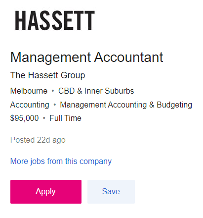

I am currently doing a Bachelor of International Business at RMIT University. I am a transfer student from Vietnam, and I am going to graduate after this semester. I can speak English, Vietnamese, and French. Moreover, I also have a part-time job delivering food in Melbourne City. On the other hand, I used to be a gamer addicted when I spent nearly a day just playing League of Legends, but when I grew up and found that I have a better hobby is playing soccer, and until now I am in the RMIT University soccer team. At the moment, I hope that the Covid-19 pandemic will end soon so I can book a flight ticket to visit my parents.
Personal Information
What makes me interested in IT?
First, I became interested in IT when I almost finished my Bachelor of International Business. When I had not come to Melbourne, I did not know what to choose for my career. At that time I thought that I could be good with the business job but when I started to study that was very boring. Moreover, I am a creative person, and I can spend most of my time sitting in front of a computer without feeling tired. That is the time I know I can be better with IT.
Secondly; Information Technology is developing compared to the growth of the world. Studying IT allows me to take my career in numerous different directions. For instance, I can be a computer programmer, computer system analyst, web developer, cybersecurity, etc. On the other hand, as I said before, I am doing a Bachelor of International Business, so my background in IT is limited. Mostly when my computer has a problem, I will ask my cousin to help me. Otherwise, I will be seeking on Google to find the trouble I met then I will fix this. I was so confused about what subject I must get started to learn about IT. However, luckily when I saw the title of the Introduction of IT, I thought that is what I was looking for a while, so I registered. After studying this course, I expect that I can know the foundation of IT and start doing a double degree in IT.
My Ideal Job

As I am currently studying for a Bachelor of International Business (IB) major, there are numerous kinds of jobs such as the Business Development Manager, the Senior Financial Manager, and the Management Accountant. Among them, I am very much looking forward to becoming a Management Accountant. This industry requires me to have monthly management reports prepared to track financial performance against the budget-making comments on management reports. Cash flow projections are created-variance analysis of actual outcomes vs budget and prediction for each profit and cost centre. The business analyst role is responsible for delivering proactive and effective financial assistance and guidance to operational teams that respond to a grasp of operational and economic imperatives. The job is an outstanding opportunity for an emerging candidate to grow and progress with one of the most recognized businesses in the industry and be part of a collaborative team. As an international business student, I believe that I have sufficient skills or knowledge of Australian and International Financial Reporting Standards to improve my skills in Microsoft Excel. To be better in my ideal job, I think that at least I must know a number of IT works, which is why I want to study IT. In addition, I have good speaking and writing skills and the attention to detail that a company offers. I always want to develop myself and a business in general.
Click
Personal Profile


Through the three tests, I was able to get to know your personality traits that can affect different aspects of your life, such as confidence, perfectionism, and more. I can also use my research results to understand better what motivates, inspires, and worries about my personality types, thereby helping us build meaningful relationships more meaningful. In addition, the test also showed me my strengths and weaknesses when I was a "Defender", which was a huge help when I was working as a team in class for the next project. The strengths of a "Defender" are supportive, reliable, and patient, imaginative and observant, enthusiastic, hard-working, and good practical skills. My powers will bring many benefits when working in groups as "Defender" will help share knowledge, experience and energy with all the team members. Instead of giving hasty and disjointed opinions, "Defender" will be meticulous. In addition, they will base on the situational needs to accomplish the group's goal. Imagination, observation, and hard work are also strengths of a Defender, which will help a team function better because they will have more creative ideas and know the shortcomings in part of group work.
However, along with the strong points, there are quite a few points worth editing, such as "Defender" having a shy personality, overloading myself, and being reluctant to change. For instance, the meek shall inherit the earth, but it will be a long path if I am not recognized at all. This is perhaps Defenders' most challenging issue since I am so worried about other people's sentiments that I refuse to express myself or accept any due credit for my contributions. Defenders' expectations of me are also so high that, even if I know I could have done some tiny part of a task better, I frequently exaggerate my achievements.
Project Ideas
- Overview
- Motivation
- Description
- Geolocation:
- Booking and buying services:
- Travel Planner:
- Reviews and recommendations:
- Forecasting the weather:
- Currency converter:
- Translations:
- Payment gateways:
- Tools and technologies
- GPS
- GPRS
- Android 1.5 or higher
- Android Google API 1.5 or higher
- Android Development Tool plug-in
- Eclipse 3.4 or higher
- Sun JDK 5 or higher
- Skills requirements
- The first step is to create a new project by any name, then when the documents pile up and we know that Gradle is created, we'll have activity_main.xml and MainActivity.java, and here we have MainActivity, which will be recognised as the main homepage screen with two buttons.
- Next, we must design our app's user interface. The User Interface will be very basic and simple to use.
- Once the UI is ready, go to the code section. In the MainActivity.java class, Intent is used to investigate user choices. An Intent is a class that is used to represent a planned action. It is a critical method that helps engineers in starting another movement inside an application. It may also be used as a means of communication between activities
- In the manifest file, we should define the intent filters for all actions.
- Our Travel Guide App now makes use of Google Maps API v2 to show the map, add markers to the map, and retrieve users' latitudes and longitudes. The programme must enrol an engineering key on Web advances in order to use the Google Maps service.
- Next, all methods, listeners, and buttons required on all pages must be set up (this includes coding, declaring, and initialising).
- For example, bus.java, shopping.java, hotel.java, restaurant.java, and so forth. This involves completing all of the code for each and every page.
- Once you've finished coding, launch the programme and see the results. (Tikoo S n.d)
- What is the outcome of the project successfully?
Nowadays, a cell phone is an essential component of most people's lives. (Oshins. M 2017) The number of mobile computing apps centred on people's daily lives is steadily increasing. Location-dependent systems have been identified as an essential use in such applications. Smart Travel Guide is a popular application that demonstrates the design and execution of such a place. We propose an architecture for a mobile tourist guide system for Android phones that can conveniently deliver tourism information to mobile consumers. Our solution uses lightweight mashup technology, which can integrate many data sources to generate value-added services while overcoming mobile device restrictions. Moreover, the following are motivational and the description to prove that this smart travel planning application is useful for the needs of those who like to travel. In addition, the tools and technologies or skills required which are indispensable steps when creating an application are also included below.
People's consumption structures are constantly improving these days. The number of individuals going on excursions for leisure and amusement has increased significantly. Tourism is the world's most powerful and biggest sector, accounting for an estimated 11% of global GDP and employing 200 million people while servicing 700 million visitors worldwide—a number that is projected to quadruple by 2020. Meanwhile, the Internet provides visitors with significantly expanded travel information. However, an issue has been identified in which visitors cannot get timely travel information while on the road. To address this issue, we plan to investigate creating a mobile tourist guide system based on mashup technology. (Meng J & Xu N 2010).
How to build a travel app starts with an examination of what is currently available on the market. Today, many travel apps are accessible, each with its own set of features. Assume that an app is a cookie jar and that features are the many flavours of cookies that contribute to the app's deliciousness and appeal to users. The following is a list of the most critical and convenient travel application features. (Matyunina. J 2020)
Geolocation navigation and maps are critical components of a travel application. 52% of all mobile app users, according to data, use at least one navigation app. This number increases to 85 per cent when visitors are included. Thus, although a map serves as the basis for the customer's application, if they want consumers to use the app's map rather than moving to another navigation tool, the trip map apps must be offline-capable. Moreover, one way to do this is by including a geolocation feature. It is no secret that adding this feature would raise the cost of developing travel software, yet consumers need it even in an MVP or beta version.
Several useful technologies to consider while building a travel application: Google Maps SDK for iOS and Android provides the map directly to the application; Google Places and Facebook Places APIs provide access to an extensive database of services, tourism, and other information.
A travel application is worthless unless it has a booking or buying feature. Users expect a travel app to make hotel reservations, restaurant reservations, ticket purchases, and sightseeing trips. Do not forget to plan for transportation throughout the trip. Cabs are often one of the most necessary components of a trip whether the customer needs transportation from the airport to their hotel or a particular tourist attraction. As a consequence, a cab reservation service is a must.
Among the apps for international travel are well-known booking services for airline tickets and hotel accommodations. A user may make a price comparison and sign up for price change notifications. In this way, the programme offers its customers everything they might need for a trip in a few easy clicks.
The tourist-related app features described before may be combined into a single app, but they must be presented orderly and straightforwardly. Allow the customers to follow their trip from start to finish, from flight to the hotel, attraction visit, and return home - an intelligent pocket guide. As a consequence, customers may get a better understanding of their trips.
Consider adding a place for customer reviews, comments, and ratings in the mobile travel app. Individuals want the ability to assess businesses and share their experiences with others.
It may provide a strong foundation for establishing a trustworthy relationship and showing concern from customers' travel experiences. Additionally, as is usual, customer feedback provides invaluable insight into how to improve a travel app.
Weather conditions have a significant effect on travel planning at all times. As a consequence, including a weather feature in a tourism app is a smart move. A real-time climate forecast enables customers to plan their trips without checking the weather forecast or exit the app.
When developing a travel mobile application, or any application, it is critical to consider the user's viewpoint. When consumers go to a foreign country, they want to know the currency exchange rates, and since we cannot allow them to leave the app, a currency converter feature is critical.
Individuals travelled with vocabularies and phrasebooks in the not-too-distant past to aid in their comprehension of the language spoken around them. The times have changed, and mobile apps are now available to assist. However, instead of just adopting a conventional translation, try to expand the reach and remain current with new technologies. Therefore we can utilise augmented reality to have users instantly translate everything around them.
Allowing users to make mobile payments inside the app is critical. The app may integrate fast, easy, and dependable payment methods such as Paypal, Paytm, Google Wallet, and Apple Pay into the website. It will help decrease abandoned transactions and engage customers who want to pay in their native language, creating a pleasant user experience.
Hardware requirements:
Software requirements:
Moreover, we must have a programming language (Java, XML for designing the app), operating System (window, Linux), Android Studio, Smartphone, a USB cable for connecting the phone to PC. (Project topics 2019)
The Smart Trip Guide will help clients overcome challenges when travelling and keep in touch with their travel companions. The programme will be in constant conversation with the user, sharing nearby facts and information to make the user's experience simpler. Furthermore, this programme can be used as an intelligent system to assist the user even more. Even while in an unknown environment, a person can be aware of their surroundings. Because of the methods adopted, this programme has the potential to be used as an intelligent emergency aid application. Instead of informing everyone or a specific group of contacts, the algorithm in use can alert the user's nearest contact (Badekar N et al. 2015) The software may also be used as a companion app, which means it can assist travellers to meet new people while they move from one destination to another.
Contact me:
Phone: +61421387477
Email: s3697380@rmit.edu.vn
References list:
Click to the references list.